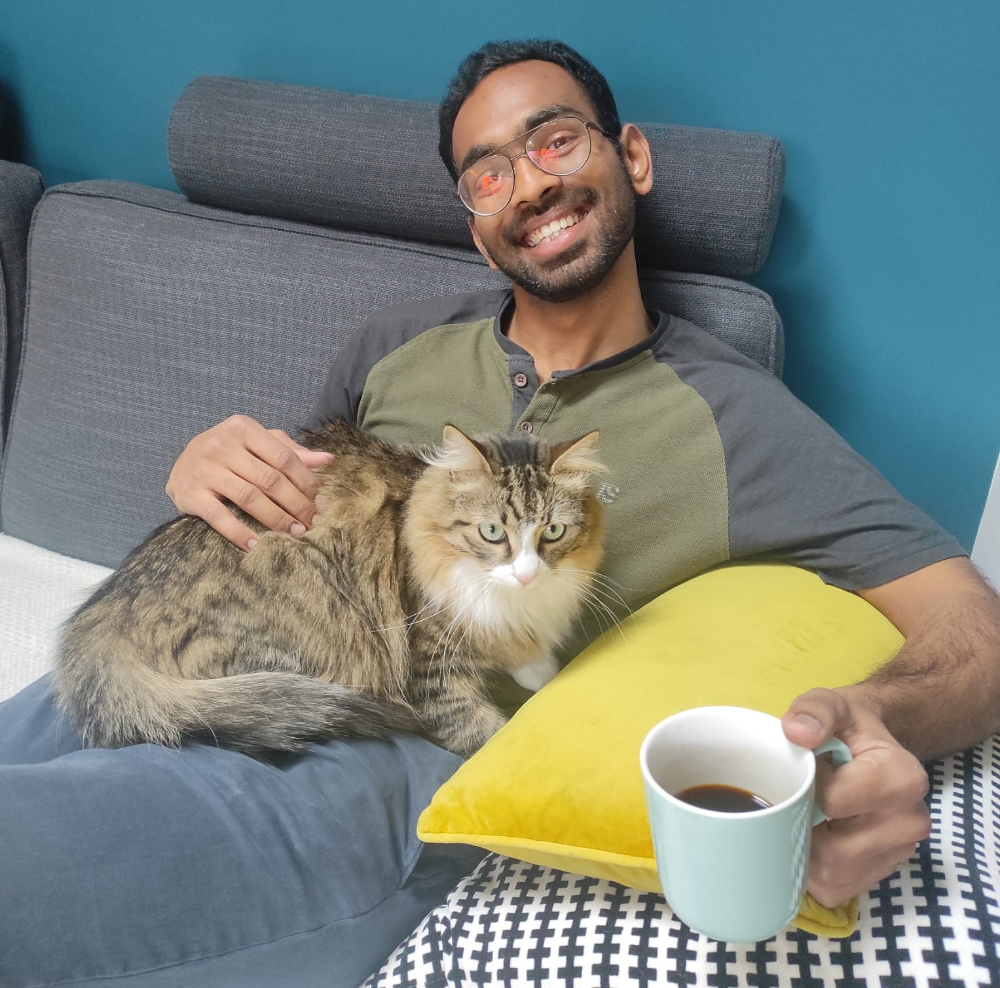

Hello, I am
I am a researcher at
LS2N, France

About Me
I am a doctoral candidate at LS2N lab on “Cuspidal Robots: Analysis, classification and
applications to 6R serial manipulators” under the guidance of Prof. Philippe Wenger and
Prof. Damien Chablat. I completed my double Master’s degree in the Erasmus Mundus course,
European Master on Advanced Robotics plus (EMARO+).
My master thesis
was on optimal kinematic design
of a parallel mechanism for otological surgery in collaboration with the Nantes Hospital.
While working as Junior Research Fellow at Indian Institute of Technology (IIT), Jodhpur,
I worked in Sensorless compliance in 6-dof parallel mechanisms and multi-agent load
manipulation. During my initial corporate career, I worked as a mechanical design
engineer at Grey Orange Pvt Ltd, a leading warehouse automation company in India.
Buzzwords that interest me:
algebraic geometry,
optimisation,
neural network,
design,
control,
motion planning,
cuspidal robots
buzzword: algebraic geometry
Currently using it for analysis of cuspidal robots. Worked previously with Jose Capco, University of
Innsbruck and currently involved in discussion with Abhilash Nayak for enhancing the analysis
using the tools from algebraic geometry.
buzzword: optimisation
worked on developing an efficient and accelerated Nelder-Mead algorithm for design optimisation of a
2UPS-1U parallel mechanism including joint limits and collision constraints. used different
algorithm strategies in PhD thesis to find connectivity between two points in T(n) space with closed
algebraic curves.
buzzword: neural network
worked on developing a neural network for design optimisation and mechanism recommendation system.
The system implemented Nelder-Mead algorithm for optimisation to consider the non-smooth constraints
Currently working on interesting project on finance that considers several parameters to optimise
for static algorithms.
buzzword: design
I have worked extensively on design of parallel manipulators used for
force compliance, manufacturing as well as surgical applications. I was involved in multi
robot design for mobile manipulation and quadrotors during my initial years of research. I currently
work on design of serial manipulators, especially manipulators that are cuspidal.
buzzword: control
worked on several projects involving control for passive compliance as well as active compliance in
parallel manipulators. Previous projects include design and control of quadrotor, multi-robot mobile
manipulation. Currently working on time optimal trajectory planning of cuspidal robots.
buzzword: motion planning
Previous projects include minimum snap trajectory planning of quadrotor,
contact efficient multi-robot mobile manipulation. Currently working on trajectory planning
framework of cuspidal robots.
buzzword: cuspidal robots
Cuspidal robots have multiple inverse kinematic solutions (IKS) in a singularity free region, aspect.
This property allows them to change IKS during path planning and may have dangerous implications if
not taken into account. My PhD thesis involves theoretical study, classification and application of
cuspidality to 6R serial robots